Hello and welcome to the Nintendo Console Chronology! This page is dedicated to those who want to learn more about their favorite Nintendo systems, as well as for those who want to delve into the world of Nintendo throughout the decades! Thank you for visiting, and I hope you learn something new!
The Nintendo company itself was actually found all the way back on September 23, 1889! They started originally by selling cards that had beautiful art printed on them, and they were called Hanafuda cards, which is translated to "flower cards". Later on, in the 1960's and 70's, Nintendo became a toy company, producing and selling toys in the Japanese market. They even dipped their toes into the video game market in the late 70's and early 80's by making a couple arcade games as well as pong consoles. The first "video game" product that made it to the American market was a series of little handheld systems called the "Game and Watch". Over here, they were actually rebranded as "Time Out", but they were the same games and same hardware.
This all changed in 1981, when the father of Super Mario himself, Shigeru Miyamoto, created the hit arcade classic "Donkey Kong". It was a smash success, and the Nintendo company decided to shift their focus into video game production. Since then, the rest is history. Nintendo today is one of the biggest contenders in the development of video game hardware and software, and are one of the most recognizable properties on the planet.
Released: October 18, 1985
Lifetime Sales Worldwide: 61.91 million units
Discontinued: 1995
The NES revitalized the video game industry after the crash of 1983, bringing gaming back into the mainstream with iconic franchises like Super Mario Bros. It introduced the D-pad controller, which became a standard for decades, and used 8-bit hardware and cartridges for a durable, affordable gaming experience tailored to the home market.
Released: July 31, 1989
Lifetime Sales Worldwide: ~64.42 million units*
Discontinued: 2003
The GameBoy became a cultural icon with its robust build, legendary game library, and impressive battery life. Nintendo’s decision to use a monochrome, non-backlit screen helped extend playtime and keep costs low, making it a perfect fit for gamers on the go.
Released: August 23, 1991
Lifetime Sales Worldwide: 49.1 million units
Discontinued: 1999
The SNES advanced home console gaming with 16-bit graphics, enhanced sound, and effects like Mode 7, which created immersive pseudo-3D environments. Nintendo focused on quality and creative game design, opting against backward compatibility to keep the system forward-looking and cost-efficient.
Released: August 14, 1995
Lifetime Sales Worldwide: 0.77 million units
Discontinued: August, 1996
Now, this system is probably Nintendo's least known console, and for good reason. The Virtual Boy was Nintendo’s bold but short-lived attempt to bring stereoscopic 3D to gaming. It used red LED displays to minimize cost and technical complexity, but its tabletop-only design and lack of portability made it uncomfortable and impractical, leading to its early discontinuation.
Released: September 29, 1996
Lifetime Sales Worldwide: 32.93 million units
Discontinued: 2003
With its groundbreaking 3D gameplay and the debut of the analog control stick, the N64 set a new standard for immersive game worlds. Nintendo chose to stick with cartridges for their faster load times and durability, despite the rising popularity of CDs, emphasizing performance and physical reliability.
Released: November 18, 1998
Lifetime Sales Worldwide: ~32.47 million units*
Discontinued: March 23, 2003
Adding color while maintaining backward compatibility, the GameBoy Color refreshed Nintendo’s handheld line without alienating its massive Game Boy audience. It used a modest increase in processing power and a compact design to stay affordable and efficient.
Released: June 11, 2001
Lifetime Sales Worldwide: ~37.97 million units**
Discontinued: May 15, 2010
The Game Boy Advance marked a leap to 32-bit handheld gaming, delivering more complex visuals and sound, along with shoulder buttons for expanded gameplay. Nintendo favored a sleek, horizontal layout and reflective screen to maximize battery life while staying ergonomic.
Released: November 18, 2001
Lifetime Sales Worldwide: 21.74 million units
Discontinued: 2007
Nintendo’s GameCube prioritized a compact, developer-friendly design and featured a uniquely ergonomic controller. The use of proprietary miniDVDs helped combat piracy and reduce load times, though this choice sacrificed storage space compared to competitors using full-sized discs.
Released: March 23, 2003
Lifetime Sales Worldwide: ~43.54 million units**
Discontinued: May 15, 2010
With its clamshell design, front-lit screen, and rechargeable battery, the GBA SP addressed most of the criticisms aimed at its predecessor. It brought a more premium feel to Nintendo’s handheld lineup while keeping compatibility and portability intact.
Released: November 21, 2004
Lifetime Sales Worldwide: 154.02 million units
Discontinued: January 31, 2014
The DS broke new ground with its dual screens—one of which was touch-sensitive—and its built-in Wi-Fi for local and online multiplayer. Its clamshell design offered protection and compactness, while its dual-processor setup handled innovative gameplay mechanics without sacrificing performance.
Released: November 19, 2006
Lifetime Sales Worldwide: 101.63 million units
Discontinued: October 2013
The Wii revolutionized gaming by introducing motion controls, targeting not just traditional gamers but families and casual players alike. Nintendo deliberately used lower-powered hardware to maintain affordability and focus on novel gameplay over graphics, leading to massive mainstream appeal.
Released: March 27, 2011
Lifetime Sales Worldwide: 75.94 million units
Discontinued: September 16, 2020
The 3DS introduced glasses-free stereoscopic 3D, pushing visual innovation while retaining backward compatibility with DS titles. A 3D slider allowed users to control depth effects, and built-in AR capabilities and an improved online network solidified it as a forward-thinking handheld.
Released: November 18, 2012
Lifetime Sales Worldwide: 13.56 million units
Discontinued: January 31, 2017
As a bridge between handheld and home consoles, the Wii U introduced the GamePad, allowing dual-screen gameplay and off-TV play. While innovative, the bulky controller and ambiguous messaging about the console’s identity led to confusion and limited adoption.
Released: March 3, 2017
Lifetime Sales Worldwide: 150.86 million units (still ongoing)
The Switch redefined versatility in gaming by combining portable and home console play in one hybrid device. Its custom NVIDIA Tegra chip struck a balance between power and battery efficiency, while the detachable Joy-Cons offered new ways to interact with games, echoing Nintendo’s tradition of innovation.
*For some odd reason, Nintendo combined the unit sales figures of the GameBoy and GameBoy Color, and the company sees the latter as merely an upgraded GameBoy rather than it's own system. These numbers given are approximations.
**The GameBoy Advance and the Advance SP are also considered the same console as well which I also agree to. I just have them separated here because I feel that iteration of the Advance SP was an important milestone for Nintendo's handhelds. So, these numbers are also close approximations.
 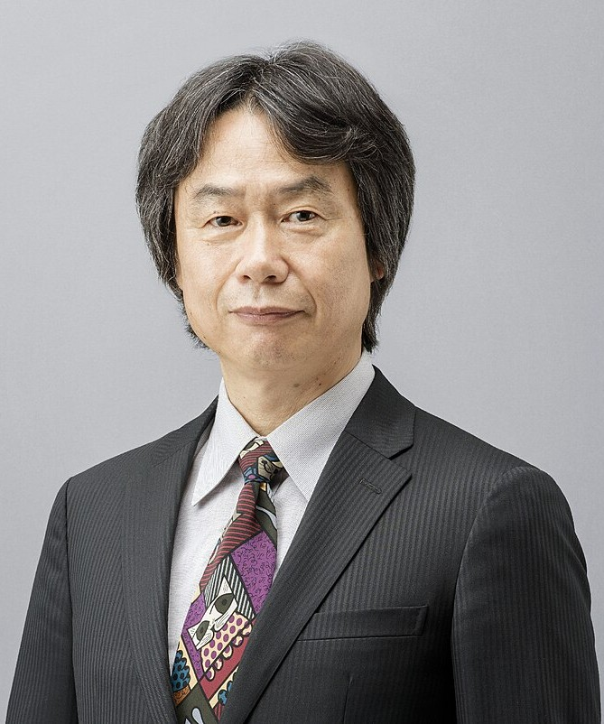
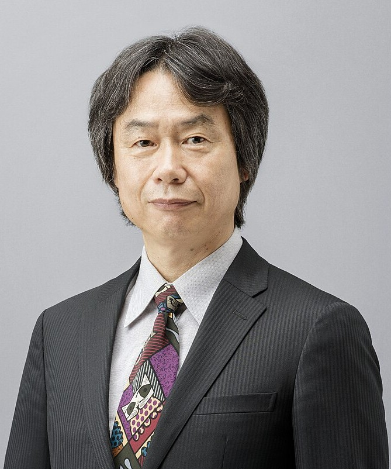
 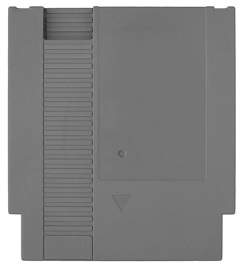
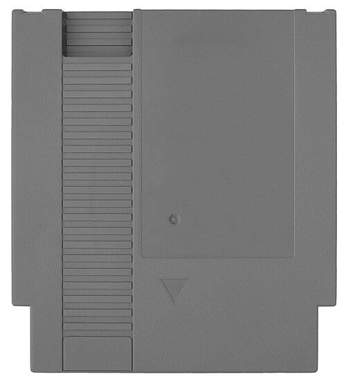


 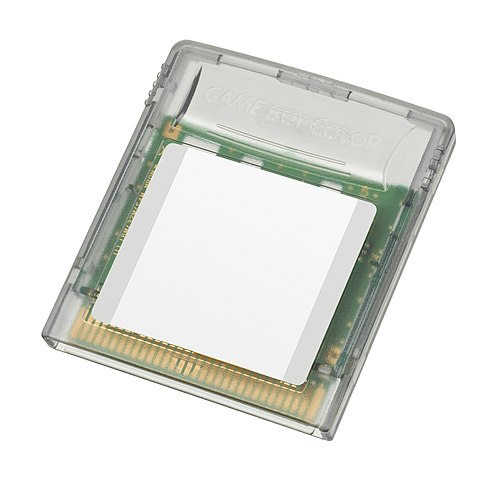
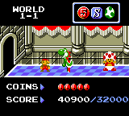
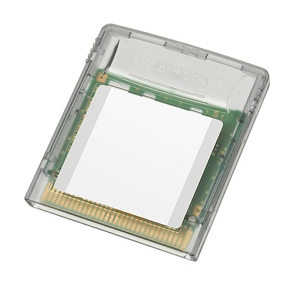
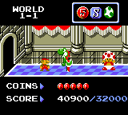


 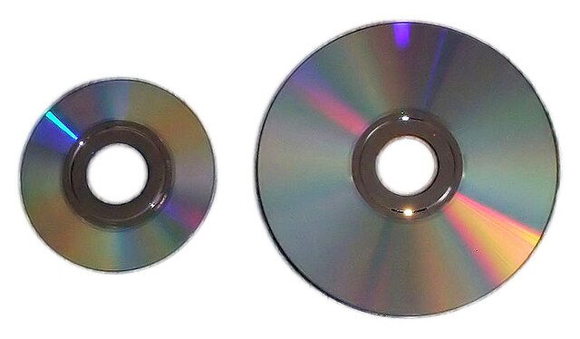
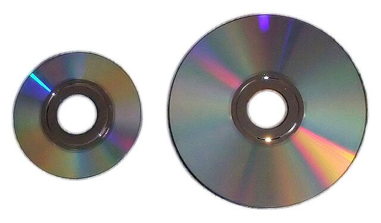


 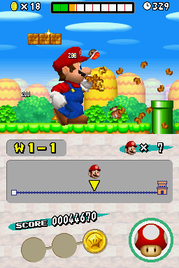
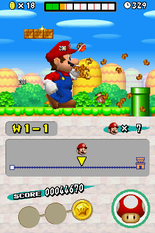


 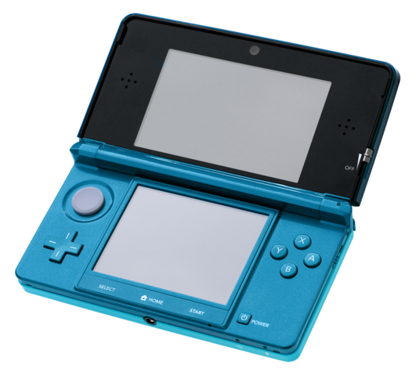
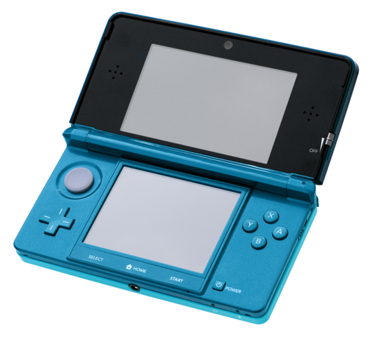


 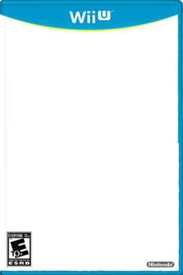
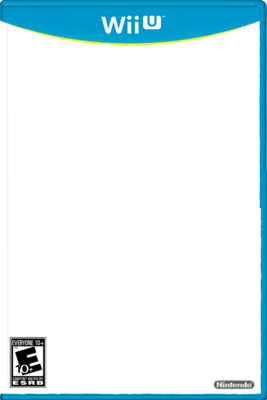


I will have a subpage that is dedicated to the sales of each console. I will have a chart that shows the sales of each console, and I will give a few signs to watch for if a console is performing well in the market, or if there are cracks to watch for to see if it is going under. I will also have a little splurge about Nintendo's ingenuity and how the company's innovations make it a powerhouse in the video game space.
Nintendo has always been a company that has pushed the boundaries of gaming. From the introduction of the D-pad on the NES controller to the motion controls of the Wii, Nintendo has always been at the forefront of innovation in gaming. The company has a long history of creating unique and innovative hardware that has changed the way we play games. Nintendo's ingenuity is what sets it apart from its competitors, and it is what has made it one of the most successful companies in the gaming industry.
Nintendo's innovation is not just limited to hardware, however. The company has also been a pioneer in software development, creating some of the most beloved and iconic games of all time. From Super Mario Bros. and The Legend of Zelda to Pokemon and Animal Crossing, Nintendo has created a library of games that have defined the gaming industry, as well as creating multiple franchises that have massive fanbases. The company's commitment to quality and innovation is what has made it a leader in the gaming industry, and it is what will continue to drive its success in the future.
Positive Publicity: If a console is getting a lot of positive publicity, it is likely doing well in the market. This can include reviews from gaming websites, social media buzz, and word-of-mouth recommendations from friends and family.
Sales Numbers: If a console is selling well, it is likely doing well in the market. This can include sales numbers from retailers, as well as sales numbers from the manufacturer.
3rd Party Support: If a console is getting a lot of support from 3rd party developers, it is likely doing well in the market. This can include announcements of new games, as well as partnerships with other companies.
Console Variants: If a console is getting a lot of variants, mostly cosmetic changes that don't give any advantage over the base product, it is likely doing well in the market. This can include special editions, limited editions, and bundles with other products.
Shovelware: If a console is receiving a significant amount of shovelware, it may indicate strong market performance. Shovelware refers to games that are often low-quality or quickly produced to capitalize on a console's popularity. While these games may not be critically acclaimed, their presence can signal that developers see the console as a lucrative platform due to its widespread adoption and booming sales.


This subpage will cover a few of Nintendo's biggest flops, and I will give a little bit of history about each console, and what went wrong with it. I will give 3 examples of Nintendo's biggest failures, and write a few reasons as to why the console failed in the long run.
Nintendo isn't a flawless company. Everyone makes mistakes and missteps. Nintendo is no different. In the course of trying something new, unforseen shortcomings and poor execution will always bring a product short of what it was projected to be. On this page, I will list three of (what I consider to be) the most significant flops that most may or may not know about.
This may go without saying, but inventing something new and trying out new things even if they might not be the best idea is still a sign of a healthy mindset and strong company. Sure, it would be great to bring about innovative things like the Wii Remote every couple of years, but the fact that Nintendo had the willingness to try and not suffer completely from the losses shows that they have faith in their research and development departments and has a forward thinking company mindset.
An attempt was made at VR in 1995... the more development that went into it, the quicker Nintendo realized that this was going to be expensive to produce, so some features had some corners cut.
It was a 3D system that was supposed to be a VR system, but it was just a red and black screen with no color. People were also concerned about motion sickness and epileptic triggers due to long play times.
It was a huge failure, and it was discontinued after only a year on the market.
The Nintendo 64 was a huge leap forward in terms of graphics and gameplay, but it was also a huge disappointment. The system was plagued by delays, and when it finally released, it was missing a lot of the features that were promised. The system also had a very limited library of games, which made it difficult for gamers to find something to play.
The Nintendo 64 was also very expensive, which made it difficult for gamers to justify the purchase. The system was also very difficult to develop for, which made it difficult for developers to create games for the system. The Nintendo 64 was a huge disappointment, and it was a huge failure for Nintendo.
The Wii U is probably Nintendo's most significant failure. It's considered to be a super safe and lazy follow up to the Wii, capitalizing off of its popularity.
The marketing and reveal was considered confusing and misleading, since many of the advertisements shown only the Wii U Gamepad, a lot of people considered that it was just a peripheral that you bought for your Wii.
People didn't see much value in getting the Wii U since the Wii in the later years didn't maintain its initial luster that it had at launch. The Wii U was marketed towards EVERYONE, since the Wii appealed to people who didn't consider themselves to be serious gamers. Nintendo throughout the Wii U's lifespan just couldn't ever decide to make it appeal more to the hardcore gamers or to the general public.